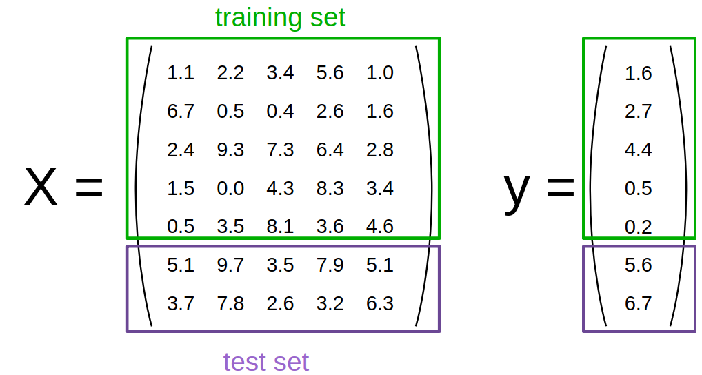
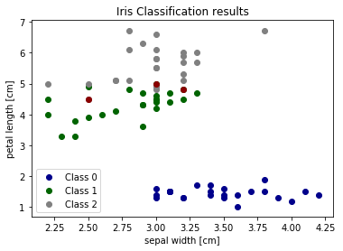

scikit-笔记03:训练集与测试集
Table of Contents
- 1. Training and Testing Data
-
- 1.0.1. load datasets, create estimator by
load_iris()andKNeighborsClassifier() - 1.0.2. split datasets
train_test_split() - 1.0.3. stratify split vs. non-stratify split
- 1.0.4. non-stratify
- 1.0.5. stratify
- 1.0.6. get model by
estimator.fitand predict byestimator.predict - 1.0.7. plotting correctly labeled data, and incorrectly labeled data
- 1.0.1. load datasets, create estimator by
-
- 2. Exercise
- 3. Misc tools
- 3.1. Scikit-learn
- 3.2. Numpy
- 3.2.1. np.where(condition, x, y)
- 3.2.2. eg0. produce the index, given
condition - 3.2.3. eg1. choose elements, given
condition, x, y - 3.2.4. eg2. fill with default value, given
condition, x, y - 3.2.5. eg3. return nonzero, given only
condition - 3.2.6. eg4. using as filtering, given only
condition - 3.2.7. np.nonzero(ndarray)
- 3.2.8. ndarray + nonzero/where => x[np.nonzero(x)]
%matplotlib inline import matplotlib.pyplot as plt import numpy as np
1 Training and Testing Data
1.0.1 load datasets, create estimator by load_iris() and KNeighborsClassifier()
To evaluate how well our supervised models generalize, we can split our data into a training and a test set:

from sklearn.datasets import load_iris from sklearn.neighbors import KNeighborsClassifier iris = load_iris() X, y = iris.data, iris.target classifier = KNeighborsClassifier()
Thinking about how machine learning is normally performed, the idea of a train/test split makes sense.
Under the assumption that all samples are independent of each other (in contrast time series data), we want to randomly shuffle the dataset before we split the dataset as illustrated above.
y
array([0, 0, 0, 0, 0, 0, 0, 0, 0, 0, 0, 0, 0, 0, 0, 0, 0, 0, 0, 0, 0, 0, 0, 0, 0, 0, 0, 0, 0, 0, 0, 0, 0, 0, 0, 0, 0, 0, 0, 0, 0, 0, 0, 0, 0, 0, 0, 0, 0, 0, 1, 1, 1, 1, 1, 1, 1, 1, 1, 1, 1, 1, 1, 1, 1, 1, 1, 1, 1, 1, 1, 1, 1, 1, 1, 1, 1, 1, 1, 1, 1, 1, 1, 1, 1, 1, 1, 1, 1, 1, 1, 1, 1, 1, 1, 1, 1, 1, 1, 1, 2, 2, 2, 2, 2, 2, 2, 2, 2, 2, 2, 2, 2, 2, 2, 2, 2, 2, 2, 2, 2, 2, 2, 2, 2, 2, 2, 2, 2, 2, 2, 2, 2, 2, 2, 2, 2, 2, 2, 2, 2, 2, 2, 2, 2, 2, 2, 2, 2, 2])
1.0.2 split datasets train_test_split()
Now we need to split the data into training and testing. Luckily, this is a common pattern in machine learning and scikit-learn has a pre-built function to split data into training and testing sets for you. Here, we use 50% of the data as training, and 50% testing. 80% and 20% is another common split, but there are no hard and fast rules. The most important thing is to fairly evaluate your system on data it has not seen during training!
1.0.3 stratify split vs. non-stratify split
train_test_split(stratify=y) |
train_test_split(stratify=None) |
|---|---|
| 'y' means split by the related proportion of 'y' label | |
| All: [ 33.33333333 33.33333333 33.33333333] | All: [ 33.33333333 33.33333333 33.33333333] |
| Training: [ 33.33333333 33.33333333 33.33333333] | Training: [ 30.66666667 40. 29.33333333] |
| Test: [ 33.33333333 33.33333333 33.33333333] | Test: [ 36. 26.66666667 37.33333333] |
| better for small dataset | better for large dataset |
1.0.4 non-stratify
from sklearn.model_selection import train_test_split train_X, test_X, train_y, test_y = train_test_split(X, y, train_size=0.5, test_size=0.5, random_state=123) print("Labels for training and testing data") print(train_y) print(test_y) print('All:', np.bincount(y) / float(len(y)) * 100.0) print('Training:', np.bincount(train_y) / float(len(train_y)) * 100.0) print('Test:', np.bincount(test_y) / float(len(test_y)) * 100.0)
All: [ 33.33333333 33.33333333 33.33333333] Training: [ 30.66666667 40. 29.33333333] Test: [ 36. 26.66666667 37.33333333]
1.0.5 stratify
Especially for relatively small datasets, it's better to stratify the split.
Stratification means that we maintain the original class proportion of the dataset in the test and training sets.
For example, after we randomly split the dataset as shown in the previous code example, we have the following class proportions in percent:
So, in order to stratify the split, we can pass the label array as an additional option to the train_test_split function:
train_X, test_X, train_y, test_y = train_test_split(X, y, train_size=0.5, test_size=0.5, random_state=123, stratify=y) print('All:', np.bincount(y) / float(len(y)) * 100.0) print('Training:', np.bincount(train_y) / float(len(train_y)) * 100.0) print('Test:', np.bincount(test_y) / float(len(test_y)) * 100.0)
All: [ 33.33333333 33.33333333 33.33333333] Training: [ 33.33333333 33.33333333 33.33333333] Test: [ 33.33333333 33.33333333 33.33333333]
1.0.6 get model by estimator.fit and predict by estimator.predict
By evaluating our classifier performance on data that has been seen during training, we could get false confidence in the predictive power of our model. In the worst case, it may simply memorize the training samples but completely fails classifying new, similar samples – we really don't want to put such a system into production!
Instead of using the same dataset for training and testing (this is called "resubstitution evaluation"), it is much much better to use a train/test split in order to estimate how well your trained model is doing on new data.
classifier.fit(train_X, train_y) pred_y = classifier.predict(test_X) print("Fraction Correct [Accuracy]:") print(np.sum(pred_y == test_y) / float(len(test_y)))
1.0.7 plotting correctly labeled data, and incorrectly labeled data
We can also visualize the correct and failed predictions
print('Samples correctly classified:') correct_idx = np.where(pred_y == test_y)[0] #<- return the correctly predicted row indices print(correct_idx) print('\nSamples incorrectly classified:') incorrect_idx = np.where(pred_y != test_y)[0] #<- return the incorrectly predicted row indices print(incorrect_idx) # Plot two dimensions colors = ["darkblue", "darkgreen", "gray"] # plot correctly labeled data with different color for n, color in enumerate(colors): idx = np.where(test_y == n)[0] # get the indices of rows with certain label plt.scatter(test_X[idx, 1], test_X[idx, 2], color=color, label="Class %s" % str(n)) # plot incorrectly labeled data with dark red # - for incorrect_idx rows get the data of label '1' # - for incorrect_idx rows get the data of label '2' plt.scatter(test_X[incorrect_idx, 1], test_X[incorrect_idx, 2], color="darkred") plt.xlabel('sepal width [cm]') plt.ylabel('petal length [cm]') plt.legend(loc=3) plt.title("Iris Classification results") plt.show()

We can see that the errors occur in the area where green (class 1) and gray (class 2) overlap. This gives us insight about what features to add - any feature which helps separate class 1 and class 2 should improve classifier performance.
2 Exercise EXERCISE
EXERCISE: Print the true labels of 3 wrong predictions and modify the scatterplot code, which we used above, to visualize and distinguish these three samples with different markers in the 2D scatterplot. Can you explain why our classifier made these wrong predictions?
3 Misc tools
3.1 Scikit-learn
3.1.1 train_test_split(X,y,test_size=0.5, train_size=0.5, stratify=y)
3.1.2 ML models by now
- from sklearn.datasets import make_blobs
- from sklearn.datasets import load_iris
- from sklearn.model_selection import train_test_split
- from sklearn.linear_model import LogisticRegression
- from sklearn.neighbors import KNeighborsClassifier
3.2 Numpy
3.2.1 np.where(condition, x, y)
Return elements, either from x or y, depending on condition.
If only condition is given, return condition.nonzero().
这个函数返回的是一个 tuple of arrays, 指示的正好是符合 condition 的坐标.
3.2.2 eg0. produce the index, given condition
x = np.arange(9.).reshape(3, 3) # array([[0., 1., 2.], # [3., 4., 5.], # [6., 7., 8.]]) np.where(x) # # dim-0 坐标 dim-1 坐标 # | | # v v # (array([0, 0, 1, 1, 1, 2, 2, 2]), array([1, 2, 0, 1, 2, 0, 1, 2])) np.where(x>5) # (array([2, 2, 2]), array([0, 1, 2])) x[np.where(x>5)] # array([6., 7., 8.])
3.2.3 eg1. choose elements, given condition, x, y TECHCOMBO
where( how_to_choose, x, y )
np.where([[True, False], [True, True]], [[1, 2], [3, 4]], [[9, 8], [7, 6]]) # return: # array([[1, 8], # [3, 4]])
array([[1, 8], [3, 4]])
. . True means, value of this location is selected from related location of 1st ndarray . False means, value of this location is selected from related location of 2nd ndarray . . which array to choose for the same location . [[True, False], [True, True]] 1st: [[1, 2], [3, 4]] . ^ ^ ^ ^ ✓ ✓ ✓ . | | | | . 1st 2nd 1st 1st 2nd: [[9, 8], [7, 6]] . ✓ . . ===> [[1, 8],[3, 4]] .
3.2.4 eg2. fill with default value, given condition, x, y TECHCOMBO
x = np.arange(9.).reshape(3, 3) # [[ 0. 1. 2.] # [ 3. 4. 5.] # [ 6. 7. 8.]] np.where(x < 5, x, -1) # Note: broadcasting. # array([[ 0., 1., 2.], # [ 3., 4., -1.], # [-1., -1., -1.]])
array([[ 0., 1., 2.], [ 3., 4., -1.], [-1., -1., -1.]])
3.2.5 eg3. return nonzero, given only condition TECHCOMBO
# <- only given condition, so this will return np.nonzero(arr) arr = np.array([[0, 1],[1, 0]]) nonz = np.where(arr)
0 - 54918791-5f6d-4269-bdeb-d8b05651576f
3.2.6 eg4. using as filtering, given only condition TECHCOMBO
np.where( x > 5 ) # (array([2, 2, 2]), array([0, 1, 2])) x[np.where( x > 5 )] # Note: result is 1D. # array([ 6., 7., 8.])
3.2.7 np.nonzero(ndarray)
Return the indices in the manner of tuple of array of the elements that are non-zero.
Returns a tuple of arrays, one for each dimension of a, containing the indices of the non-zero elements in that dimension.
x = np.array([[1,0,0], [0,2,0], [1,1,0]]) np.nonzero(x)
(array([0, 1, 2, 2]), array([0, 1, 0, 1]))
. . | | 0 col | 1 col | 2 col | . |-------
---------–—+--–—| . | 0 row | 1 | 0 | 0 | . | 1 row | 0 | 2 | 0 | . | 2 row | 1 | 1 | 0 | . . indices of non zero: . (0, 0) . (1, 1) . (2, 0) . (2, 1) . ^ ^ . | +— [0, 1, 0, 1] . [0, 1, 2, 2] .
3.2.8 ndarray + nonzero/where => x[np.nonzero(x)] TECHCOMBO
x = np.array([[1,0,0], [0,2,0], [1,1,0]]) x[np.nonzero(x)] # Note: result is 1D.
array([1, 2, 1, 1])
. . nonzero —> dimension_num-tuple of ndarray . . x: . | | 0 col | 1 col | 2 col | . |-------
---------–—+--–—| . | 0 row | ✓ 1 | 0 | 0 | . | 1 row | 0 | ✓ 2 | 0 | . | 2 row | ✓ 1 | ✓ 1 | 0 | . . indices of non zero: . (0, 0) . (1, 1) . (2, 0) . (2, 1) . ^ ^ . | | . [0, 1, 2, 2] [0, 1, 0, 1] . --------------------------–— . ([0,1,2,2], [0,1,0,1]) . . . x[np.nonzero(x)] = [1,2,1,1] .